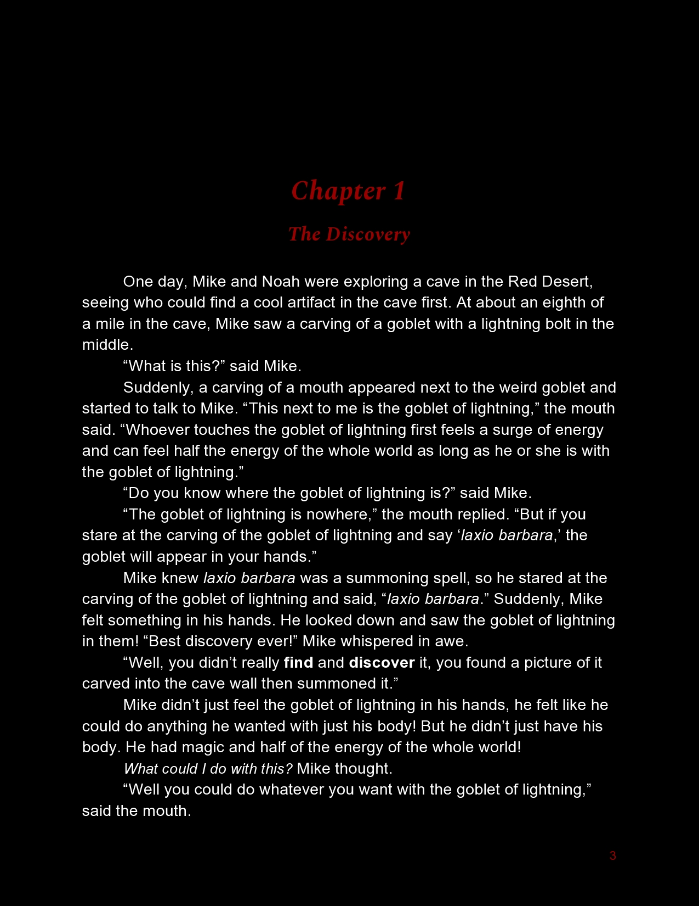
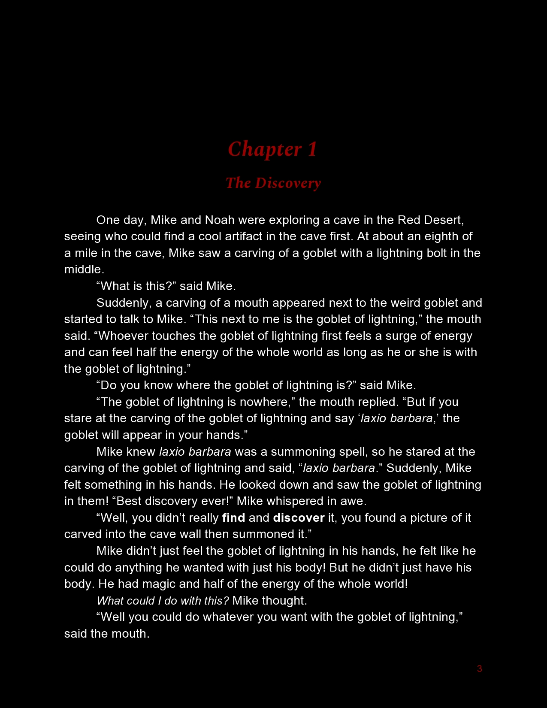

In Mike Licker and the Dragon's Magic, you will meet a young sorcerer named Mike Licker, whgo lives in another galaxy, in a town named Flintor, next to a town named Vivex. His sorcerer teacher's name is Mr. David Edgar. One day, Mike goes on an adventure to find a dragon that has its own magic powers that can do a lot of things, but are really good at reversing spells that have been put on anyone or anything. Mike started this adventure (Quest) for two reasons. The first reason was to reverse the spell that trapped Gwen (Mike's little sister). The second reason was to reverse the spell that Flame (Mr. David Edgar's evil twin who chose to use magic to become a fire spirit) used to control Mike's nemesis Noah's body when Noah went to the The Pantin volcanoes. Mike has to do this in 1 day or his sister we'll have to start drinking her own sweat, and Flame will have taken over all of Flintor, Vivex, and the red desert.


 



Copyright Franklin C. Henderson 2020 All Rights Reserved
Mike and his nemesis Noah, go to the Red Desert to have a competition to see who could find a cool artifact first. Mike found what is called The Goblet of Lightning. When Noah saw the Goblet of Lightning in Mike's hands, he lunged at him. The second time that he lunged, Mike in front of the cave wall and Mike dodged so Noah ran into the cave wall. Noah challenged Mike to a wizard duel (a wizard fight with the wizards using spells). Mike walked home and enchanted a key to send a note to his sorcerer teacher to ask him to come to to give him some help and tips. His teacher told him that he could use a trapping spell, Kragver Milox, to trap Noah for three days. Mike's sister demanded that she could know what Mike's sorcerer teacher had said and told Mike that if he didn't tell her, she would put a trapping spell on him because that was all she had heard. They had a quick fun duel, but after Mike had already trapped Gwen, he had remembered that his sorcerer teacher was leaving town for a meeting and he hadn't told Mike the untrapping spell so Gwen would be trapped for the three days without being able to get the food or water.
Mike thought he should go to a library so he could find the counter spell to Kragver Milox. First he thought he should go to a library in Flintor, the MakerRimInventrus Academy Library, even though if he got caught he would get kicked out of magic lessons. Someone found him and rang an alarm, so Mike ran to the entrance to the magic tunnels and ran past the guards to Shadowhollow. He snuck through Shadowhollow and got to the main library that anyone was allowed to go to. There he didn't find a counterspell to Kragver Milox but he found a book about the dragon's Magic. He learned that the dragon's magic was really good at reversing spells and it could reverse any spell that was put on anyone or anything. After he read that, he knew this was it. He was going to start an adventure.